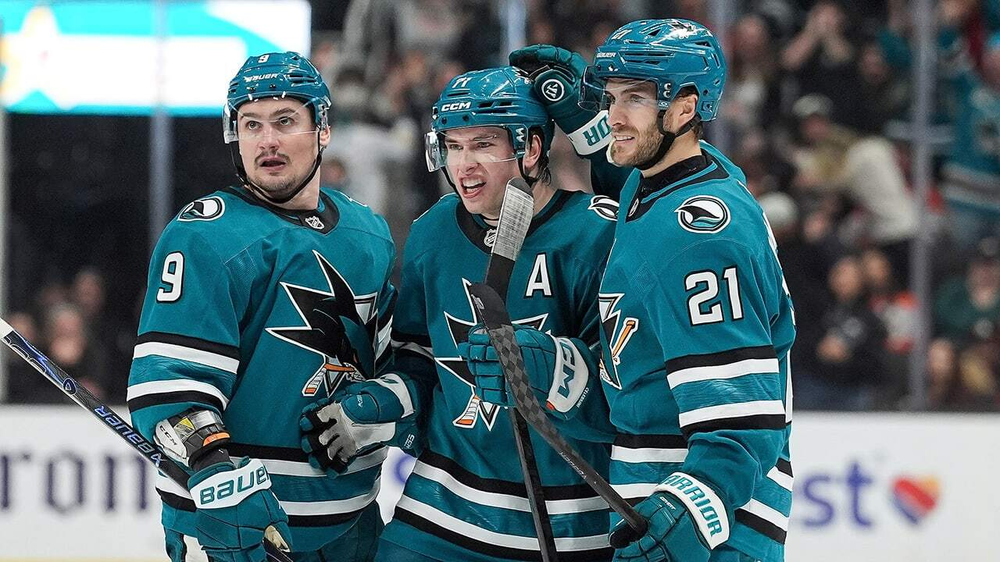
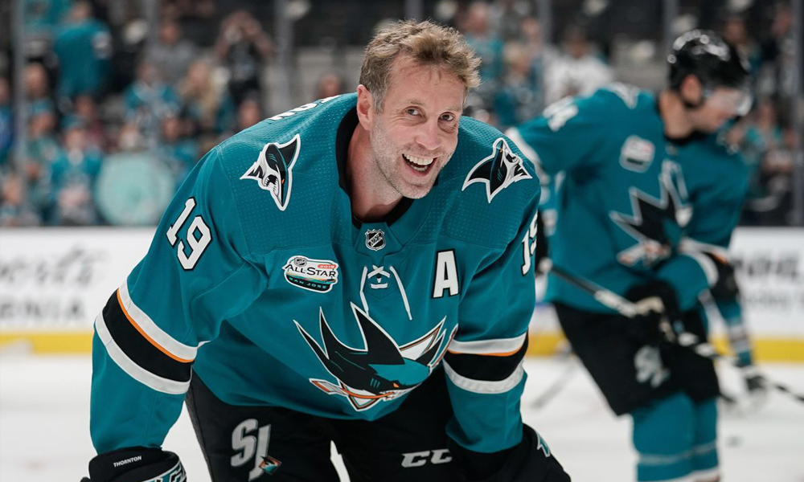
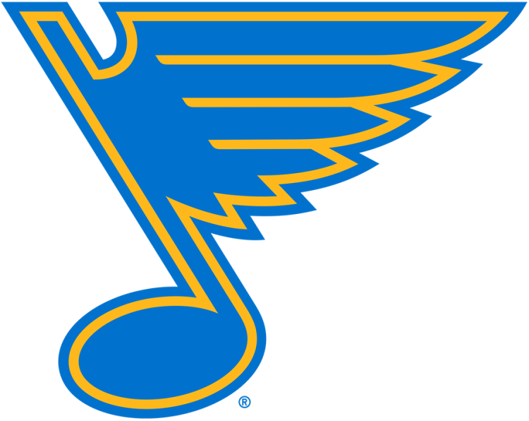
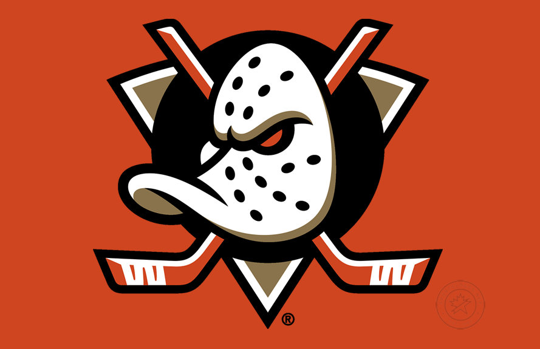
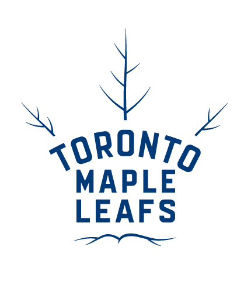
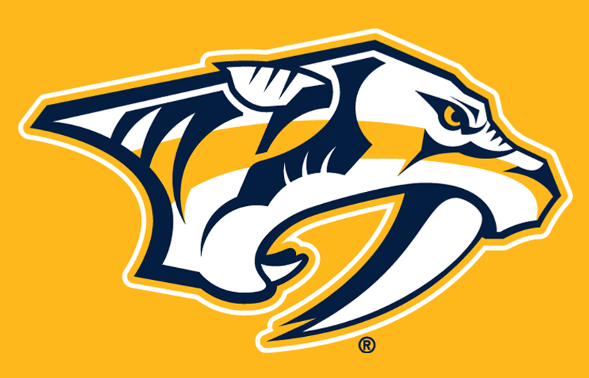

BEM VINDO AO
SAN JOSE SHARKS
Os Sharks foram a primeira grande expansão da Bay Area e rapidamente se tornaram um dos times mais consistentes da liga, mantendo uma sequência de quase 20 anos sendo figurinha carimbada nos playoffs. O logotipo do tubarão mordendo o taco e a entrada dos jogadores no gelo através de uma mandíbula gigante de metal tornaram o SAP Center (o "Shark Tank") um dos cenários mais icônicos de todo o hockey mundial.
A era de ouro do time foi marcada por nomes como Joe Thornton e Patrick Marleau, que transformaram San Jose em uma potência, embora o título da Stanley Cup tenha escapado em 2016 contra os Penguins. Após um período doloroso de reconstrução, o time ressurgiu com uma nova identidade visual e uma estratégia de recrutamento que focou 100% em velocidade e inteligência de jogo, deixando para trás o estilo pesado de outrora.
Atualmente, em abril de 2026, os Sharks são oficialmente o "time do futuro" que chegou mais cedo. Sob o comando de Ryan Warsofsky, a equipe chocou o mundo com uma campanha histórica, onde seus jovens talentos não apenas competiram, mas dominaram estatísticas individuais da liga. O Shark Tank voltou a ser um lugar temido, não pela força física, mas pela habilidade técnica absurda que esse elenco jovem consegue exibir em cada Power Play.
CONHEÇA OS
JOGADORES

Joe Thornton
Central
2005–2020
AGENDA
26

STL 228
30
1

ANA2

TOR4

NSH